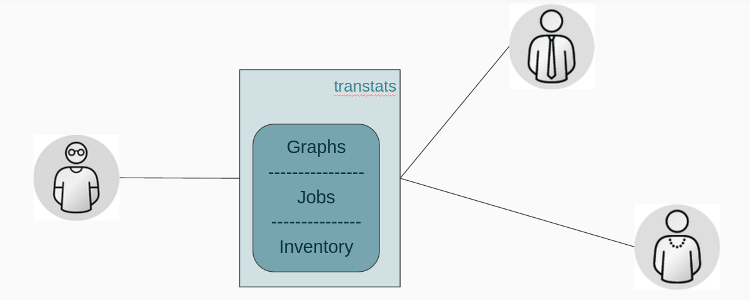

Sync with translation platform for statistics How translation progress is going?
Compare stats with release streams Is latest translations pulled and packaged?
Manage translation differences What piece of translation cause an error or left to get translated?
Keep upstream updated Automate push/pull operations to update source with translations.
Create notifications Based on release dates: emails to Developers, Managers and Quality Engineers.

Jobs operate on some inventory: translation platforms, release streams and upstream repositories
for registered packages to process translation data, and represent information in the form of graphs for enabled languages.
Server could not be reached at the moment. Please try after sometime.